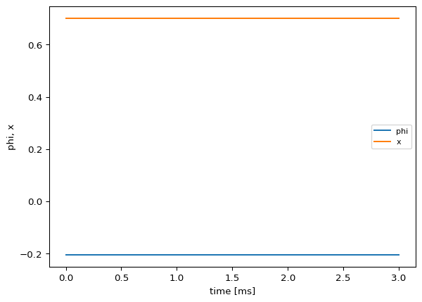

# =============================================================================
# 2D Network Diffusion - Getting Started with NetworkDynamics.jl (Part 2)
# =============================================================================
# Source: https://juliadynamics.github.io/NetworkDynamics.jl/stable/generated/getting_started_with_network_dynamics/
#
# Extension of 1D diffusion to two coupled state variables (x, phi).
# Both variables diffuse independently on the same network.
# Vertex dynamics: dx = esum; edge: e_dst = v_src - v_dst (broadcasting).
# =============================================================================
id: 103
label: "2D Network Diffusion"
description: >
Two-dimensional diffusion on an undirected network. Each node has two
state variables (x, phi) that diffuse independently via the same
antisymmetric edge function. The edge function broadcasts over both
dimensions: e_dst .= v_src .- v_dst.
Recreates the second part of the NetworkDynamics.jl Getting Started tutorial.
references:
- "https://juliadynamics.github.io/NetworkDynamics.jl/stable/generated/getting_started_with_network_dynamics/"
# -- Local Dynamics ------------------------------------------------------------
local_dynamics:
name: Diffusion2D
label: "2D Diffusion vertex"
description: >
Two-variable diffusion node: dx/dt = esum_x, dphi/dt = esum_phi.
Both state variables are coupling variables, meaning the vertex
outputs both to edges and the edge function operates on 2D vectors.
system_type: continuous
autonomous: true
parameters: {}
coupling_terms:
c_flow:
description: "Aggregated edge flow into this vertex (2D vector: flow_x, flow_phi)"
state_variables:
x:
label: "Diffusion state x"
description: "First quantity diffusing on the network"
equation:
rhs: "c_flow"
initial_value: 0.0
distribution:
name: SquaredGaussian
seed: 1
domain: { lo: -3.0, hi: 3.0 }
coupling_variable: true
variable_of_interest: true
phi:
label: "Diffusion state phi"
description: "Second quantity diffusing on the network"
equation:
rhs: "c_flow"
initial_value: 0.0
distribution:
name: Gaussian
seed: 1
domain: { lo: -3.0, hi: 3.0 }
coupling_variable: true
variable_of_interest: true
# -- Network -------------------------------------------------------------------
network:
label: "10-node Barabasi-Albert network"
description: >
Undirected Barabasi-Albert scale-free random graph with 10 nodes
and attachment parameter k=4. Matches the 2D tutorial section.
number_of_nodes: 10
number_of_regions: 10
graph_generator:
name: barabasi_albert
type: BarabasiAlbert
parameters:
k: { name: k, value: 4 }
coupling:
DiffusiveCoupling2D:
name: DiffusiveCoupling2D
label: "2D Diffusive Coupling"
description: >
Broadcasting antisymmetric edge: e_dst .= v_src .- v_dst.
Operates element-wise on 2D state vectors, producing
flow_x and flow_phi outputs.
delayed: false
pre_expression:
rhs: "x_j - x_i"
description: "Broadcasting diffusive gradient: v_src - v_dst (per dimension)"
# -- Integration ---------------------------------------------------------------
integration:
description: "Explicit Runge-Kutta (Tsit5) with dt=0.01 over t in [0, 3]"
method: Tsit5
step_size: 0.01
duration: 3.0
2D Network Diffusion
Multi-dimensional diffusion with broadcasting edge functions
Extends the NetworkDynamics.jl Getting Started tutorial to 2D diffusion — each node has two state variables (\(x\), \(\phi\)), both marked as coupling variables. The edge function broadcasts over all dimensions using e_dst .= v_src .- v_dst.
YAML Specification
Model Report
2D Network Diffusion
Two-dimensional diffusion on an undirected network. Each node has two state variables (x, phi) that diffuse independently via the same antisymmetric edge function. The edge function broadcasts over both dimensions: e_dst .= v_src .- v_dst. Recreates the second part of the NetworkDynamics.jl Getting Started tutorial.
Two-variable diffusion node: dx/dt = esum_x, dphi/dt = esum_phi. The model comprises 2 state variables representing neural population activity.
\[\frac{dx}{dt} = c_{flow}\]
\[\frac{dphi}{dt} = c_{flow}\]
| Parameter | Value | Unit | Description |
|---|
Pre-synaptic transformation: \[c_{\text{pre}} = x_{j}\]
Post-synaptic transformation: \[c_{\text{post}} = b + a \cdot gx\]
| Parameter | Value | Description |
|---|---|---|
| \(b\) | 0.0 | Shifts the base of the connection strength while maintaining the absolute difference between different values. |
| \(a\) | 0.00390625 | Linear scaling factor of the coupled (delayed) input. |
Regions: 10
Conduction velocity: 3.0 mm/ms
Method: Tsit5
Time step: \(\Delta t = 0.01\) ms
Duration: 3.0 ms
Generated Julia Code
from tvbo import SimulationExperiment
exp = SimulationExperiment.from_file("yaml/diffusion_2d.yaml")
Code(exp.render_code("networkdynamics"), language='julia')using Graphs
using NetworkDynamics
using OrdinaryDiffEqTsit5
function Diffusion2D_f!(dx, _x, esum, p, t)
x, phi = _x
dx .= esum
nothing
end
vertex_Diffusion2D = VertexModel(;
f = Diffusion2D_f!,
g = StateMask(1:2),
sym = [:x, :phi],
name = :Diffusion2D,
)
function DiffusiveCoupling2D_edge_g!(e_dst, v_src, v_dst, p, t)
e_dst .= v_src - v_dst
nothing
end
edge_DiffusiveCoupling2D = EdgeModel(;
g = AntiSymmetric(DiffusiveCoupling2D_edge_g!),
outsym = [:flow_x, :flow_phi],
name = :DiffusiveCoupling2D,
)
g = barabasi_albert(10, 4)
nw = Network(g, vertex_Diffusion2D, edge_DiffusiveCoupling2D)
s = NWState(nw)
using Random
rng = MersenneTwister(1)
for node in 1:nv(g)
s.v[node, :x] = -3.0 .+ (3.0 - -3.0) .* rand(rng)
end
for node in 1:nv(g)
s.v[node, :phi] = (-3.0 + 3.0) / 2 .+ (3.0 - -3.0) / 6 .* randn(rng)
end
tspan = (0.0, 3.0)
prob = ODEProblem(nw, uflat(s), tspan, pflat(s))
sol = solve(prob, Tsit5(); saveat=0.01)
adj_matrix = Float64.(adjacency_matrix(g))
using Random: MersenneTwister
function spring_layout(g; seed=42, iterations=50, k=1.0)
rng = MersenneTwister(seed)
n = nv(g)
pos = randn(rng, n, 2)
for _ in 1:iterations
disp = zeros(n, 2)
for i in 1:n, j in (i+1):n
d = pos[i, :] - pos[j, :]
dist = max(norm(d), 0.01)
rep = k^2 / dist
disp[i, :] .+= d / dist * rep
disp[j, :] .-= d / dist * rep
end
for e in edges(g)
i, j = src(e), dst(e)
d = pos[j, :] - pos[i, :]
dist = max(norm(d), 0.01)
att = dist^2 / k
disp[i, :] .+= d / dist * att
disp[j, :] .-= d / dist * att
end
for i in 1:n
dl = max(norm(disp[i, :]), 0.01)
pos[i, :] .+= disp[i, :] / dl * min(dl, 0.1)
end
end
return pos
end
using LinearAlgebra: norm
node_positions = spring_layout(g)
using Plots
plot(sol; ylabel="state", xlabel="time", title="Diffusion2D on 10-node network")
Run & Plot
ts = exp.run(format="networkdynamics")
ts.plot()WARNING: Imported binding MainInclude.eval was undeclared at import time during import to Main. WARNING: import of MainInclude.eval into Main conflicts with an existing identifier; ignored. WARNING: Imported binding MainInclude.include was undeclared at import time during import to Main. WARNING: import of MainInclude.include into Main conflicts with an existing identifier; ignored. WARNING: Imported binding MainInclude.eval was undeclared at import time during import to Main. WARNING: import of MainInclude.eval into Main conflicts with an existing identifier; ignored. WARNING: Imported binding MainInclude.include was undeclared at import time during import to Main. WARNING: import of MainInclude.include into Main conflicts with an existing identifier; ignored. ┌ Warning: Component model allocates similar arrays to inputs! └ @ NetworkDynamics ~/.julia/packages/NetworkDynamics/Fl0Oh/src/doctor.jl:169
